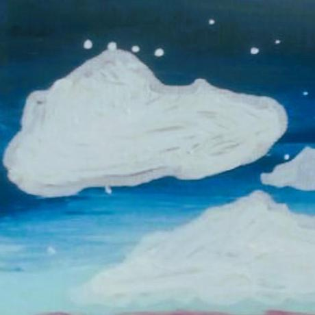

To the leaders, developers, science lovers, entrepreneurs, and quiet observers of tomorrow:
I founded this archive to bring us together. It was designed as a reminder that whatever path you choose, you can make the world slightly better in your own unique way.
There is no single "right" way to interact with this signal:

[Exhibition Record: Original acrylic painting capturing the transition from the upper atmosphere into the deep cosmic void]
This framework operates strictly on an honor system. When you take a piece of this archive or use these free resources, I hope you will pass that joy forward, but that is a quiet promise between you and the world. External systems can enforce laws, but they cannot enforce kindness—that is a choice only you can make. If you do not choose to act out of goodwill for its own sake, no mandate can force you to. I simply chose to believe in something better.
A thousand years from now, my hope is that this work has influenced a vast ecosystem of individuals who are profoundly proud of what they have built. Whether that means leading deep-space aerospace teams, launching ethical enterprises, or simply becoming a kinder friend, parent, or neighbor—you are part of the network.
True systemic change doesn't require grand, sweeping gestures. It is built on small, daily decisions to be just a little better than we were yesterday.
Keep the signal active. Build your future, and pass the joy forward.